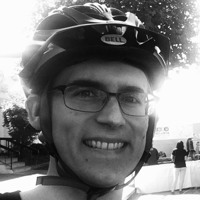
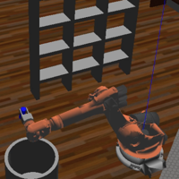
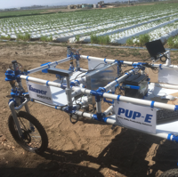
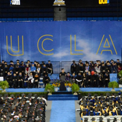
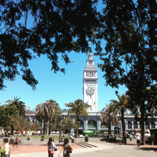
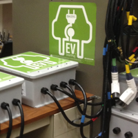
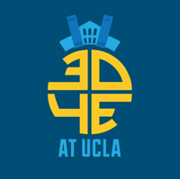
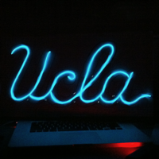

Milestones
Key Personal & Professional Milestones
-

-

Fall 2017
Enrolled in Udacity Robotics Software Engineering Nanodregee
I wanted to learn more about computer vision, object recognition, and deep learning so I decided to enroll. Plus, this was an opportunity to firm up my Python skills.
-

Summer 2016
Joined Tanner Research as a Full Time Engineer
Though I continue to focus on agricultural robotics, I support other R&D initiatives at Tanner Research. Some days, I even get to
playwork with lasers. -

Spring 2016
Graduated from UCLA with a B.S. in Mechanical Engineering
Onward!
-

Summer 2015
Joined Autodesk Student Expert Program
After going through the Student Expert Bootcamp in San Francisco and learning about Fusion 360, I joined the Autodesk Student Expert Network. When I returned to UCLA, I taught several Fusion 360 workshops as part of 3D4E.
-

Summer 2015
Joined Tanner Research as an Engineering Intern
I was hired to work on the company's strawberry transport robot as part of a USDA SBIR Phase I grant. I built the second prototype and improve the robot's steering algorithms.
-
Summer 2014
Co-Founded Biznector, Inc
Biznector provided a platform for manufacturers to engage with third party logistics providers. I served as the CTO of Biznector, Inc and helped secure a $500,000 initial valuation. The company ceased operations shortly after I left the company to complete my engineering degree.
-

Spring 2014
Joined the UCLA Smart Grid Energy Research Center as an Undergraduate Researcher
I started building electrical vehicle chargers for UCLA SMERC. I ended up leading a team of undergraduates to update the design, improve the documentation, and work towards UL Certification.
-

Spring 2013
Founded 3D4E at UCLA
I founded the club that would become the UCLA chapter of 3D4E, or 3D Printing '4' Everyone. We started out in my apartment, but eventually grew into a full 3D printing lab on campus for students from all majors to come together and collaborate.
-

Fall 2012
Started at UCLA
I hit the ground running with no idea what I'd get myself into...
-
Spring 2012
Eagle Scout
My Eagle Scout project helped refurbish the Foothill Unity Center facilities. I love Troop 4 and served in several roles, including Senior Patrol Leader and Troop Guide.
-
Ancient
History!